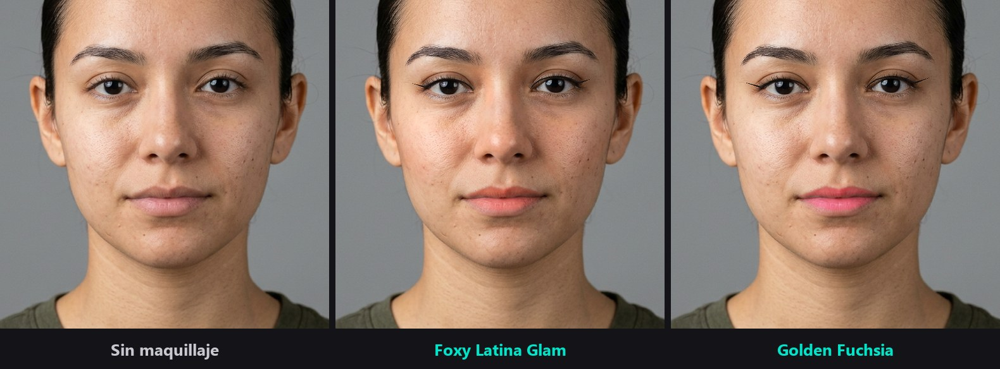

Tu mejor versión
en cada directo
Retoque facial, looks de maquillaje y filtros en tiempo real, directamente en tu cámara. Funciona con OBS, TikTok Live Studio, Zoom, Discord y cualquier programa que use una webcam.
Para Windows 10 y 11 de 64 bits · Prueba gratis con marca de agua

Lo que incluye
Belleza
- Piel natural: suaviza y corrige manchas y ojeras sin perder textura
- Ajuste de rostro, ojos y labios
- Pupilentes de varios colores
Efectos
- 12 looks de maquillaje con intensidad ajustable
- Pestañas en 3D que siguen tu párpado y tu cabeza
- Filtros de color para darle estilo a tu directo
Salidas
- Cámara virtual para OBS, TikTok Live Studio, Zoom, Discord y más
- Spout para enviar el video a OBS y otros programas compatibles
Planes
Prueba gratis
Para probarlo todo antes de decidir
- Todas las funciones
- Con marca de agua en la imagen
- Sin registro
Básico
Para videollamadas, clases y directos sencillos
- Retoque natural de piel y rostro
- Maquillaje a tu gusto: labial, sombras, pestañas, cejas y pupilentes
- Filtros de color y fondo desenfocado o pantalla verde
- Cámara virtual, Spout para OBS y formato vertical 9:16
- Sin marca de agua
Streamer
Para streamers que quieren estilo y espectáculo
- Todo lo del plan Básico
- Looks de maquillaje completos con un clic
- Efectos en el rostro y ambientes animados
- Sin marca de agua
Licencia para un PC, que puedes pasar a otro equipo. Cancela cuando quieras. Con el plan Básico puedes probar los looks y efectos, con marca de agua mientras los uses.
Instalación
- Descarga el instalador y ábrelo.
- Windows puede mostrar el aviso «Windows protegió tu PC», porque el instalador todavía no lleva firma digital. Pulsa Más información y luego Ejecutar de todas formas.
- Deja marcada la opción de la cámara virtual y termina la instalación.
- Abre CamAR Studio, elige tu cámara y activa la cámara virtual.
- En OBS, Zoom o el programa que uses, selecciona CamAr Studio Virtual Camera.
Requisitos
Mínimos
- Windows 10 u 11 de 64 bits
- Intel Core i5 de 7.ª gen o Ryzen 5
- 8 GB de RAM
- GPU compatible con DirectX 11
Recomendados
- Intel Core i7 o Ryzen 7
- 16 GB de RAM
- NVIDIA RTX 2060 o AMD RX 6600, o superior
Preguntas frecuentes
¿Es seguro el aviso de Windows?
Aparece con los programas que aún no tienen firma digital. Descarga CamAR Studio solo desde esta página para asegurarte de tener el archivo original.
¿Puedo cambiar de PC?
Sí. Desvincula la licencia en el PC actual desde la ventana de activación y úsala en el nuevo. Hace falta conexión a internet para ese paso.
¿Qué plan me conviene?
Si usas la cámara para videollamadas, clases o directos donde solo quieres verte bien, el Básico tiene todo lo necesario, incluida la salida a OBS y el formato vertical. Si quieres looks completos y efectos para tus directos, elige Streamer. Puedes probar los dos gratis con marca de agua.
¿Puedo cambiar de plan?
Sí. Compra el plan nuevo y activa su clave en CamAR Studio desde la ventana de licencia. Después cancela el anterior desde el enlace del correo de tu compra.
¿Necesito internet todo el tiempo?
No. La suscripción se verifica una vez al día si hay conexión, y sigue funcionando hasta 14 días sin internet.
¿Qué pasa si cancelo?
CamAR Studio sigue funcionando con marca de agua cuando termine el periodo pagado. Si renuevas, se reactiva sola.